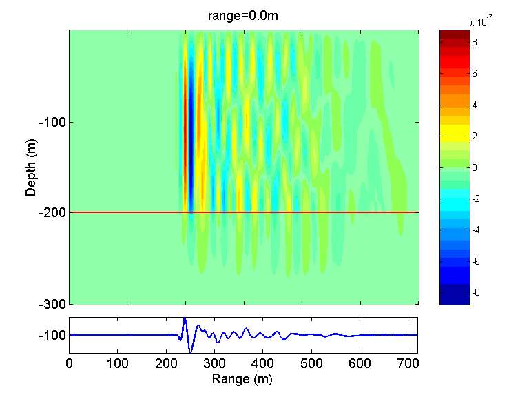
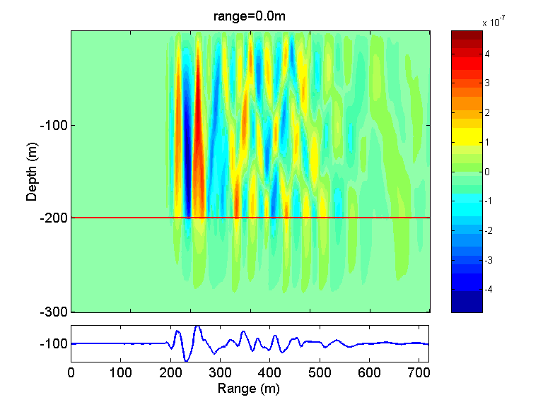

This example illustrates time reversal by comparing backpropagated signals at a 10km-range. A 50Hz single-cycle sine source is used for initialization.
Cet exemple illustre le retournement temporel en comparant les signaux rétropropagés à une distance de 10 km. Une source sinusoïdale à cycle unique de 50 Hz est utilisée pour l'initialisation.
In the linear case, we observe excellent focusing at the source point. However, in the nonlinear case, steepening leads to shock attenuation, forbidding reciprocity and inducing visible demodulation effects at the focal range.
Dans le cas linéaire, on observe une excellente focalisation au point source. En revanche, dans le cas non-linéaire, le raidissement de l'onde entraîne une atténuation de choc qui rompt la réciprocité, provoquant des effets de démodulation visibles à la focale.

Fig. 4.a: Linear backpropagation (NPE steepening term removed) Fig. 4.a : Rétropropagation linéaire (terme de raidissement NPE supprimé)

Fig. 4.b: Nonlinear backpropagation (Full NPE model) Fig. 4.b : Rétropropagation non-linéaire (modèle NPE complet)